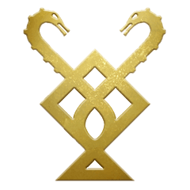
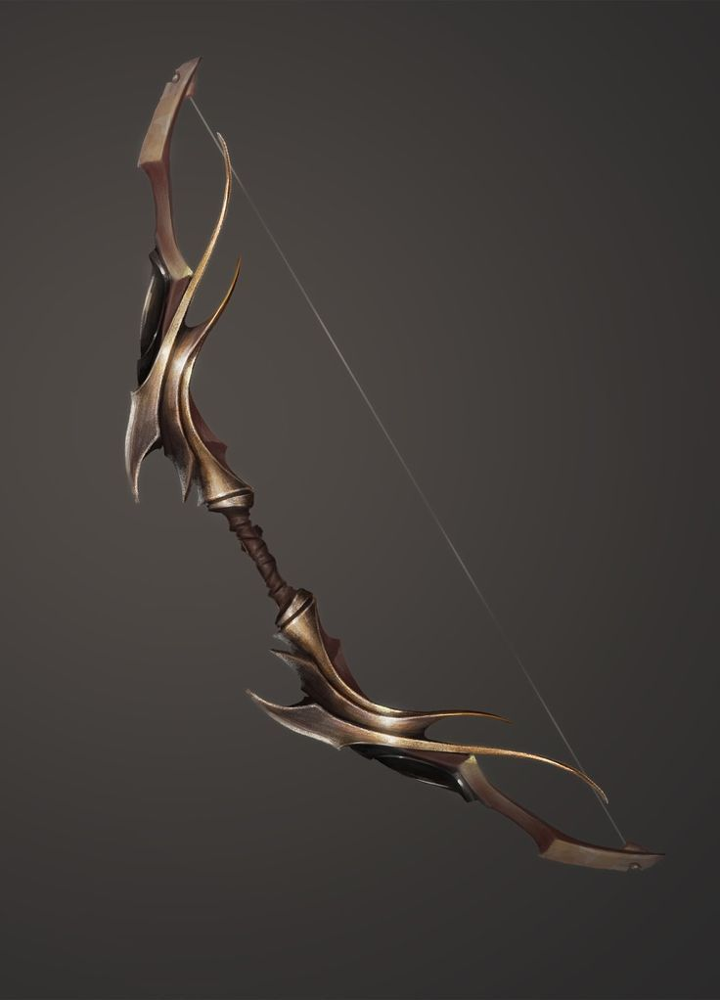
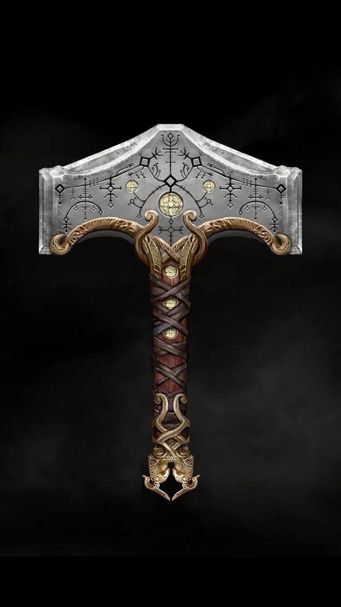

Помимо стрельбы стрелами, Атрей может использовать лук как дробящее оружие, когда он обретает уверенность в бою, способный сбивать, топтать и временно удерживать противников своего отца . Это также единственное оружие, которое может использовать рунический призыв . Помимо помощи Кратосу в бою, основная цель Talon Bow - отвлечь врагов.

Клинки Хаоса
"Клинки Хаоса, выкованные в самых отвратительных глубинах Аида . После прикрепления лезвия оставались такими, прикованными и опаленными к плоти, частью тела носителя. Постоянное напоминание о клятве Кратоса."
В Клинки Хаоса являются парой сцепленных лопастей , которые были вылеплены в бога войны , Ареса . Арес сделал клинки для слуги, который окажется достойным его службы. Лезвия были первой парой скованных лезвий, которые Кратос использовал в серии God of War .
История
Клинки Хаоса были выкованы в самых темных глубинах Подземного мира самим Аресом. Они были наполнены огнем, что позволяло им воспламеняться при каждой атаке, выполняемой пользователем. Цепи Клинков растягивались на определенное расстояние при каждой атаке, обеспечивая плавное движение независимо от того, кто ими владел. Цепи клинков были навсегда обожжены на предплечьях владельца, что служило напоминанием об их клятве Богу Войны и могло быть снято только самим Богом Войны или когда время рабства владельца закончилось. Однако, когда их создатель мертв, а слуга все еще владеет ими, их можно снять или надеть, когда это необходимо.
После того, как Кратос пообещал свою жизнь Богу Войны, Арес приказал своим Гарпиям принести Клинки Хаоса и передал их спартанцу , утверждая, что это оружие действительно достойное Чемпиона Бога. После того, как Арес уничтожил силы варваров , Кратос использовал свое новое оружие, чтобы убить короля варваров Алрика в единоборстве. Кратос продолжал использовать Клинки во время своего служения Аресу и Богам - даже против своей собственной жены Лисандры и дочери Каллиопы , которую он неосознанно убил, пока находился в ведомом богом гневе, установленном Аресом.
Кратос, на пике своей задачи убить Бога Войны, лишил его Клинков Хаоса после того, как он защищал свою семью в одной из Иллюзий Ареса. Когда у него отняли Клинки, Арес манипулировал Клинками, чтобы еще раз убить семью Кратоса, в то время как беспомощный Кратос наблюдал за ним в ужасе. После падения Ареса Клинки больше никогда не видели, но Кратос вскоре получил аналогичные Клинки Афины.
Убив Ареса и заняв его место бога войны, Кратос получил все оружие Ареса, включая Клинки Хаоса, хотя он поклялся никогда больше не использовать их.
Несколько лет спустя Кратос нашел Клинки Хаоса и принес их с собой в скандинавское царство, где спрятал их вместе, завернутые в толстую красную ткань с простым греческим узором, под половицами своей каюты, надеясь, что никогда не будет. использовать их снова.
Роман объясняет, почему Кратос сохранил Клинки Хаоса, несмотря на их болезненную историю. Он вообще не мог избавиться от них; клинки всегда возвращались к нему при самых надуманных обстоятельствах. Например, он пытался сбросить их в океан, но само море отвергло их и разрушило его лодку. Его выбросило на берег с лезвиями рядом с ним. После этого инцидента он сдался и спрятал их под половицами как вынужденное напоминание о своей трагической истории и взрывной ярости.

В конце концов, однако, сын Кратоса заболевает из-за противоречивой природы внутри него. Узнав, что главный ингредиент, необходимый для лечения Атрея, находится в Хельхейме - где ледяная магия Топора Левиафана была бесполезна из-за непреодолимого холода царства, так как ни один враг не может быть убит таким оружием - Кратос извлек Клинки из их укрытия и мрачно приковал их цепи к его предплечьям, чтобы использовать их еще раз.
В отличие от ледяного топора Левиафана, лезвия излучают стихию огня. После постепенного обновления лезвия постепенно меняют внешний вид, восстанавливая треснувшие греческие лезвия в более нордическом стиле, добавляя нордические символы, похожие на топор Левиафана. Эти глифы светятся огненно-оранжевым светом при воспламенении, а маленькие руны, написанные на древнескандинавском языке, украшают края каждого клинка. Рукоятки становятся золотого цвета и получают две прорези на глазах черепа для Рунических атак ; один для легкого и один для тяжелого, а также позволяет Кратосу менять навершие для разных атрибутов. Кратос также может направить огонь левого клинка на свой щит., прежде чем ударить по противникам, нанеся огромный урон. Клинки с помощью рунической атаки под названием «Метеоритный удар» могут вызвать метеоритный поток огня, который наносит противникам урон от горения. После встречи с Броком в Хельхейме клинки также улучшаются, чтобы временно направлять Ветры Хель.
Левиафан
Левиафан Ax является двуручный боевой топор, который является Кратос основным наступательным оружием "в бога войны.
Он был выкован братьями Хульдра, Синдри и Броком , которые также выковали молот Тора , Мьёльнир , после того как почувствовали ответственность за разрушения, причиненные Тором. В качестве оружия, созданного для противодействия силе Мьёльнира и вдохновленного эпическими размерами Йормунганда , Брок предлагает назвать топор Левиафаном. [1] По словам Синдри при первой встрече с ним, клинок был сделан для Лауфи и передан Лауфи, которая передала его своему мужу Кратосу перед своей смертью.
На клинке топора начертано несколько рун, которые наделяют его различными способностями, в том числе использованием льда и способностью вызывать оружие с любого расстояния. В нем также есть два слота для размещения рунических атак, тяжелая и легкая атака для каждого слота. Навершие топора можно персонализировать с помощью навершия, которое можно найти в Королевствах или купить Броку и Синдри.
Во время путешествия Кратоса по распространению праха Фэй он встречает Брока и Синдри, каждый из которых обновляет топор, улучшая его магию и силу атаки. Принеся одному из братьев Ледяное Пламя, топор можно улучшить, увеличив размер клинка и добавив изысканно украшенное золото на лезвие и рукоять.

Коготь Лук. История
Длинный лук был сделан из тиса матерью Атрея , которая также научила его использовать его во время тренировочной охоты. Она сделала его больше обычного, чтобы он мог в него перерасти. Он используется вместе с колчаном, в котором хранятся стрелы.
Во время путешествия Лесная Ведьма дает луку волшебную нить, которая может быть наполнена светом Альфхейма, чтобы наполнить его стрелы указанным светом, что становится полезным для активации световых кристаллов эльфов для создания прочных световых мостов. Гораздо позже Синдри использует зуб недавно убитого Хрезлира, чтобы наполнить нить силой молнии Дракона, которая также может наполнять его стрелы молнией, чтобы разрушить блокирующие стены из кристаллизованного сока Мирового Древа. Атрей, кажется, зачаровывает свои стрелы произнесенными заклинаниями, которые меняются в зависимости от элемента, который он использует.
Гномы- кузнецы Брок и Синдри могут непрерывно улучшать лук, чтобы увеличить скорость стрельбы стрел и силу рукопашных ударов, а его колчан также можно улучшить, чтобы увеличить количество стрел, которые он держит.
Помимо стрельбы стрелами, Атрей может использовать лук как дробящее оружие, когда он обретает уверенность в бою, способный сбивать, топтать и временно удерживать противников своего отца . Это также единственное оружие, которое может использовать рунический призыв . Помимо помощи Кратосу в бою, основная цель Talon Bow - отвлечь врагов.

Мьёльнир
Мьёльнир - это молот Тора , бога озиров, связанного с громом. Мьёльнир изображается в скандинавской мифологии как одно из самых грозных и мощных орудий из существующих, способных сравнять горы. В своем рассказе о скандинавской мифологии « Прозаическая Эдда» повествует о том, что характерная короткая рукоятка молота возникла из-за ошибки при его изготовлении. ошибка была вызвана укусом мухи головы дварфа.


Молот чрезвычайно мощный, он способен убить большинство существ одним ударом и передать огромное количество электричества..